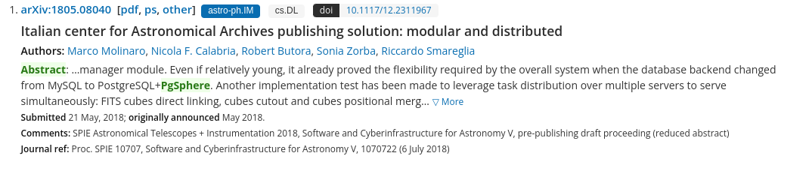

Что такое pgsphere?
pgsphere - это расширение для работы с сферической геометрией.
Кому это нужно? Например, астрономам
Система управление обсерваторией(телескопы роботы) использовала pgsphere
Почему развивать важно? Почему выбирают?
Индексация обьектов через R-Tree
Описание фигур на небесной сфере(границы созвездий например)
Преобразования на сфере
Много кто пользуется, большой спрос, поэтому важно исправлять ошибки и добавлять новые фичи
https://habr.com/ru/companies/otus/articles/696556/
Упоминание в научных статьях

Контрибьюторы pgsphere.
С кем я работал?
Vitaly Davydov(Postgres Pro)
Ed Sabol(NASA)
Задача #1: Центр масс
В чем суть задачи:
Задача #1: Центр масс
Коротко об идеи реализации
Формула центра масс для системы материальных точек
Задача #1: Центр масс
С чем столкнулся?
Проблема проецирования (0, 0, 0) на сферу
Нужно ли делать центр масс через теорему Стокса для полигонов?
Проблема проецирования
Задача #1: Центр масс
Как это работает?
SELECT @@ ARRAY[
spoint(40.7128, -74.0060),
spoint(34.0522, -118.2437),
spoint(37.7749, -122.4194)
] AS center;
center
----------------------------------------
(3.04366980631979 , 0.858938068921891)
(1 row)
Задача #1: Центр масс
Как это работает?
SELECT center(ARRAY[
spoint(0, 10),
spoint(0, -10),
]);
center
----------------------------------------
(0 , 0)
(1 row)
Задача #1: Центр масс
Как реализовал?
for (i = 0; i < num_elements; i++)
{
spoint_vector3d(&v, &array_data[i]);
point_coords.x += v.x;
point_coords.y += v.y;
point_coords.z += v.z;
}
point_coords.x /= num_elements;
point_coords.y /= num_elements;
point_coords.z /= num_elements;
Задача #2. Неверное поведение функции strans
Задача #2.
С какими сложностями столкнулся?
Что такое углы эйлера и зачем они нужны?
Как отлаживать с помощью gdb расширение?
Пример того что должна была возвращать функция
typedef struct
{
unsigned char phi_a:2, /* first axis */
theta_a:2, /* second axis */
psi_a:2; /* third axis */
float8 phi, /* first rotation angle */
theta, /* second rotation angle */
psi; /* third rotation angle */
} SEuler;
GDB
Как удалось решить?
Задача #3. Конструкторы _deg
Задача #3 Конструкторы _deg
Что я увидел в Pull Request 5 летней давности?
Человек сломал форматирование и не стал его чинить
Код тяжело влить, потому что он просто устарел
Решено было взять за основу его идеи api и сделать с нуля.
Задача #3 Конструкторы _deg
Что было сделано?
Конструктор spoint_deg(deg, deg)
Конструктор scircle_deg(spoint, deg) - второй аргумент теперь в градусах
spoly_deg(float8[])
Задача #3 Конструкторы _deg
Как это работает?
SELECT spoint_deg(57.2958, 57.2958);
spoint_deg
-----------------------
(57.2958d , 57.2958d)
(1 row)
Задача #3 Конструкторы _deg
Как это работает?
SELECT scircle_deg(spoint(10,10), 90);
scircle_deg
------------------------------------------
<(0.57522204 , -0.57522204) , 1.5707963>
(1 row)
Задача #3 Конструкторы _deg
Как это работает?
SELECT spoly_deg(ARRAY[10.0, 0.0, 10.0, 1.0, 15.0, 0.0]);
spoly_deg
------------------------------------
{(10d , 0d),(10d , 1d),(15d , 0d)}
(1 row)
Задача #3 Конструкторы _deg
С какой проблемой столкнулся?
Как переиспользовать текущие конструкторы?
Datum
spherecircle_by_center_deg(PG_FUNCTION_ARGS)
{
Datum res;
result = DirectFunctionCall2 (
spherecircle_by_center ,
PointerGetDatum(p),
Float8GetDatum(rad)
);
PG_RETURN_DATUM(res);
Задача #4 Точки из spath, spoly. Issue задачи
Задача #4 Точки из spath, spoly
С какой сложностью столкнулся?
Функция construct_array принимает OID типа и при перезагрузке он меняется
Задача #4 Точки из spath, spoly
Сигнатура construct_array
extern ArrayType *construct_array(
Datum *elems, int nelems,
Oid elmtype ,int elmlen,
bool elmbyval, char elmalign);
Задача #5
В чем суть задачи? Когда контрибьюторы делают пулл реквест - перед тем как смотреть их код прогоняется автоматическое тестирование на всех версиях постгреса от 10-15 и хотелось добавить 16ую
Первое что пришло в голову
В чем проблема такого решения? Магический размер буфера, поэтому в планах переписать на snprintf
Чему я научился?
Работа с opensource сообществом
Как работают расширения в postgres
Работа с pg indent